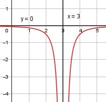

Aufgabe 107 -0,5 f(x) = --------- (x - 3)2 Quotientenregel erste Ableitung: u = -0,5, u' = 0 v = (x - 3)2 Kettenregel: v' = 2 * (x - 3) 0 * (x - 3)2 - 2 * (x - 3) * (- 0,5) f'(x) = -------------------------------------- (x - 3)4 x - 3 1 f'(x) = ---------- = -------- (x - 3)4 (x - 3)3 Quotientenregel zweite Ableitung: u = 1, u' = 0 v = (x - 3)3 Kettenregel: v' = 3 * (x - 3)2 0 * (x - 3)3 - 3 * (x - 3)2 * 1 f''(x) = --------------------------------- (x - 3)6 -3 * (x - 3)2 -3 f''(x) = --------------- = --------- (x - 3)6 (x - 3)4 Polstellen, Nenner = 0: (x – 3)2 = 0 |ⱱ x - 3 = 0 |+3 x = 3 Nenner = 0 und Zähler ≠ 0 --> senkrechte Asymptote Definitionsbereich: -∞ < x < ∞, x ≠ 3 Waagerechte Asymptote: -0,5 f(x) = ---------- = 0 für x --> ± ∞ (x – 3)2 f(x) ist < 0 für alle x Wertebereich: -∞ < f(x) < 0 Symmetrie zur y-Achse bzw. zum Punkt (0|0): -0,5 -0,5 f(-x) = ----------- = --------- (-x - 3)2 (x + 3)2 0,5 -f(-x) = ---------- (x + 3)2 f(x) ≠ f(-x) keine Achsensymmetrie f(x) ≠ -f(-x) keine Punktsymmetrie Nullstellen: -0,5 f(x) = ---------- = 0 |*(x – 3)2 (x – 3)2 -0,5 = 0 --> Widerspruch --> keine Nullstellen Schnittpunkt mit der y-Achse: x = 0 -0,5 0,5 f(0) = --------- = - ----- = -0,056 (0 - 3)² 9 Sy(0|-0,056) Extrempunkte: 1 f′(x) = ----------- = 0 | *(x - 3)3 (x - 3)3 1 = 0 Widerspruch --> keine Extrempunkte Wendepunkte: -3 f''(x) = --------- = 0 |*(x - 3)4 (x - 3)4 -3 = 0 Widerspruch --> keine Wendepunkte Graph:
